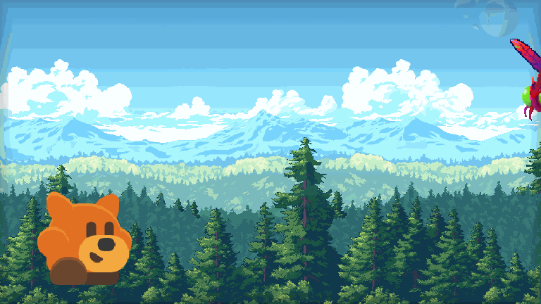
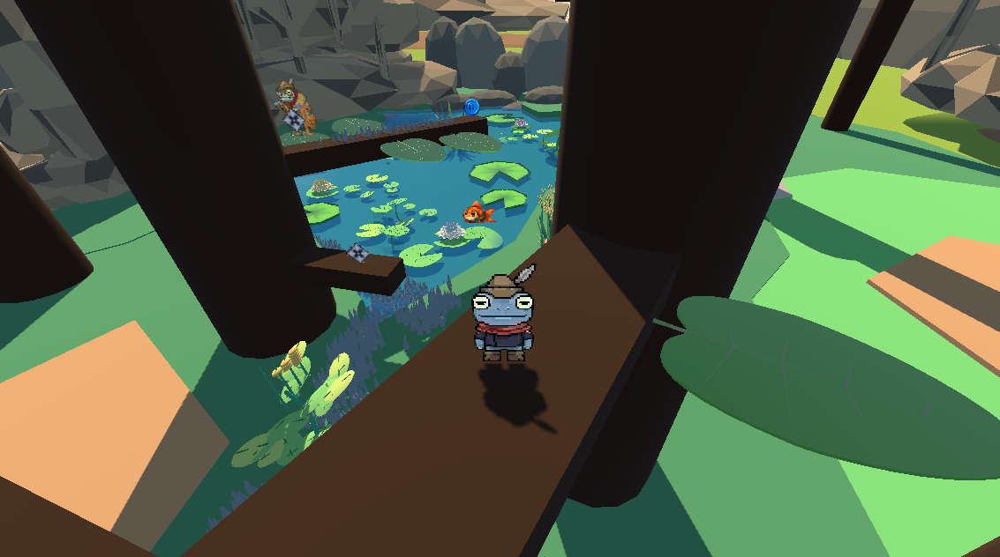
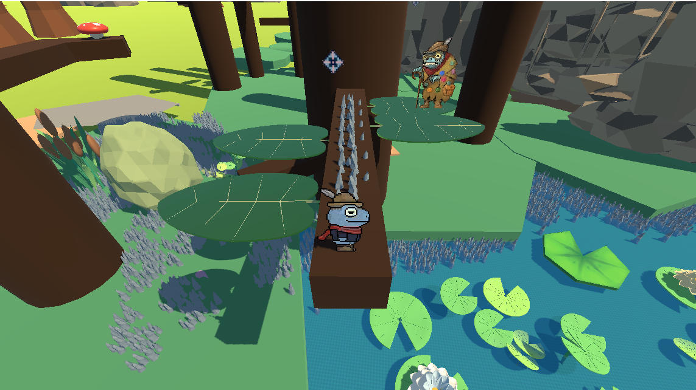
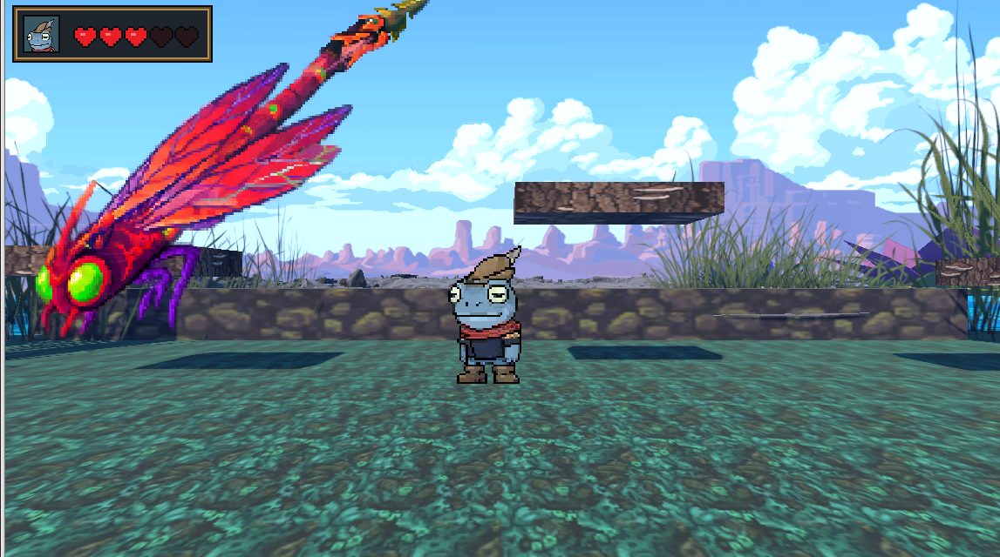
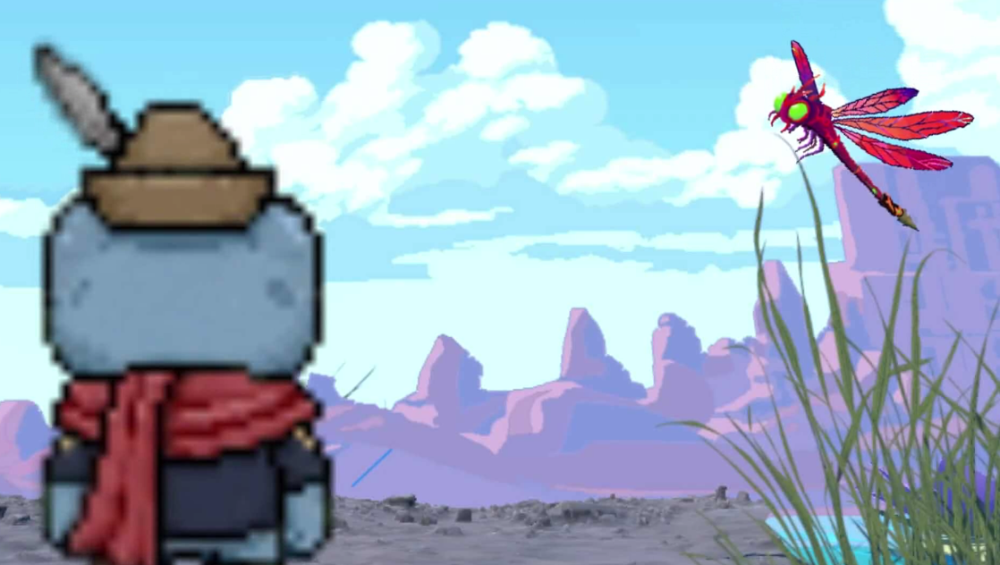
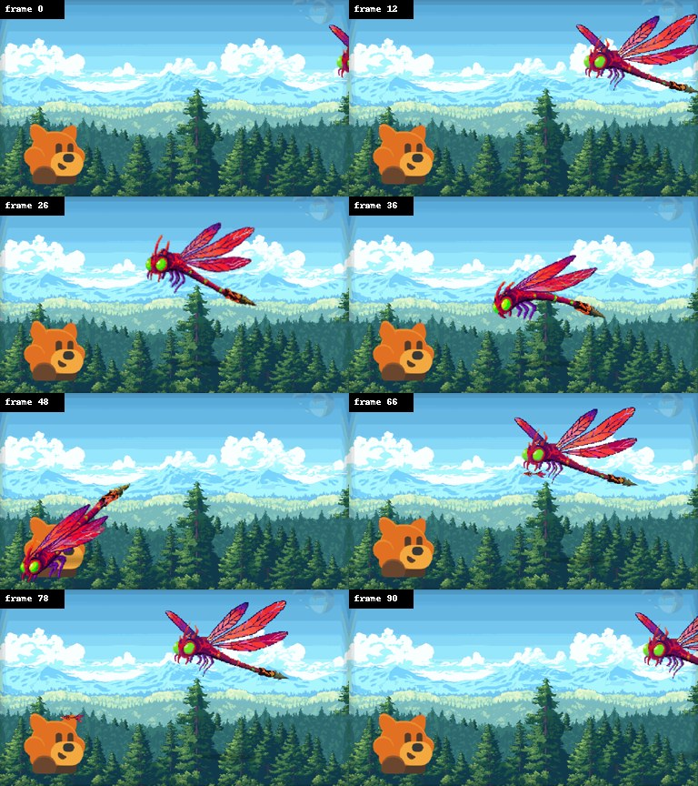
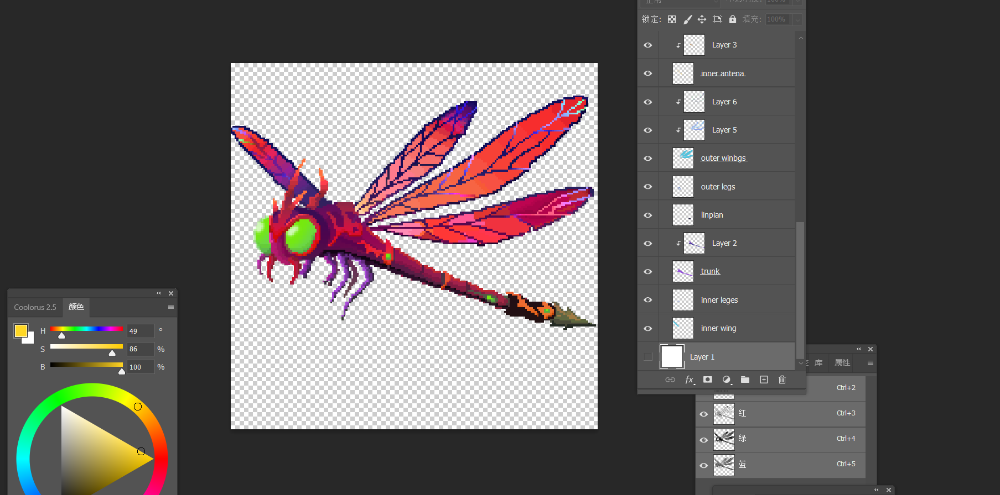

Game Design · Sound Design · Godot
Still Waters
Run Deepest.
A playable vertical slice where a seemingly peaceful pond shifts between 3D exploration, 2D combat, and an unsettling reversal of the familiar hero story.

- Format
- Playable game vertical slice
- Engine
- Godot · GDScript
- Role
- Sound systems, Dragonfly Boss VFX, visual and gameplay integration
01 / The premise
A pond that asks the player to reconsider their own victory.
The game alternates between spatial 3D exploration and 2D side-scrolling combat. The player begins as a frog cast as the pond’s defender, but encounters and aftermath gradually suggest that the frogs may be the force controlling its residents.
02 / Cutscene
From fight to doubt.
The short cutscene preserves the emotional turn after combat: victory does not resolve the story, it makes its earlier actions harder to read.
03 / World system
Explore in depth.
Fight in profile.
Low-poly pond spaces are paired with pixel-style characters and 2D encounters, so the transition between modes feels like a change in both scale and tension.




04 / Dragonfly Boss
Designed to move,
aim, dive, and fall.
The Dragonfly developed from an early blue-purple direction into a deep red antagonist that contrasts with the frog. Its animation system moves through wing-flapping, hovering, dives, player-directed projectiles, hit reactions, and a staged defeat.


05 / Sound as play
Sound is a state system, not an afterthought.
My work moved from the project’s sonic moodboard into an integrated Godot audio system: menu and exploration music, pond ambience, surface-aware footsteps, jumps, attacks, grappling, UI feedback, combat phases, and the boss aftermath.
- RecognitionAn opening cue signals the beginning of combat.
- ActionLooping battle music leaves room for movement, impacts, and warnings.
- DoubtAfter the Dragonfly falls, music withdraws and pond ambience takes over.
06 / Playable build
The current build is a desktop Godot export.
The available project files are a Windows executable and Godot .pck package, which cannot run inside a web page. A browser-playable version can be added after exporting the project from Godot for Web, which would provide the required HTML, JavaScript/WebAssembly, and web data files.